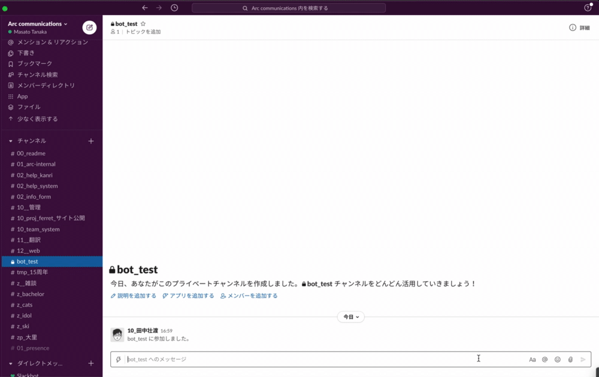
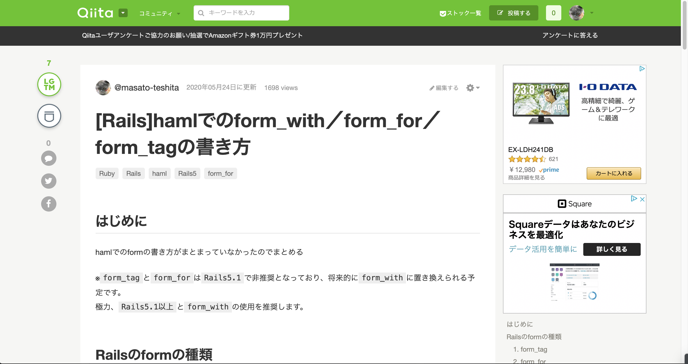

田中 壮渡 Portfolio Site
about me

パーソナル情報
田中 壮渡（たなか まさと）
1993年7月22日生まれ / 27歳
経歴
- ・2016年3月 ： 早稲田大学 法学部 卒業
-
・2016年4月 ： 学習塾運営会社 入社
大学時代から事務運営のアルバイトをしており、その中で「業務を効率化する」ことにやりがいを感じて正社員となりました。
正社員としては、事務運営の統括と事務スタッフのマネジメントを行いました。
当時の課題は、人手不足とスタッフが新人ばかりで事務応対の質が悪く、クレーム率が高いこと。
それに対し、業務を効率化して対応スピードを向上させ、教育制度を作成して均一な応対を提供できるようにしたことで、 クレーム率を半減させることに成功しました。
課題解決のために何が必要で、どの方法が効果的かを考え抜いた経験から、「課題解決力」が身につきました。
また、この仕事を経て「仕組み化」がもたらす影響の大きさに気づきました。 - ・2016年9月 ： 学習塾運営会社 退職
-
・2016年10月： アパレルECサイト運営会社(アルバイト) 入社
アパレルのECサイトを運営する会社に、倉庫スタッフのアルバイトとして入社しました。
その際、倉庫内で使用されているシステムがとても効率的かつ合理的で、「ITによる仕組み化ってこんなにもすごいんだ」ととても感動しました。
それをきっかけに、「ITを使った仕事をしたい」と強く思うようになりました。 - ・2017年5月 ： アパレルECサイト運営会社(アルバイト) 退職
-
・2017年6月 ： 翻訳、Web制作、人材派遣事業のベンチャー企業 入社
翻訳、Web制作、人材派遣の3事業を行うベンチャー企業へ転職しました。
社内SEとして、インフラ運用管理と業務改善のための社内システム導入を多く行っています。
未経験、かつ新設されたポジションで先輩や同僚がいない状況だったため、いち早く即戦力となるべく自分で考え、調べ、実行するなど主体性を意識して行動した結果、 入社後3ヶ月で給与計算システムの導入を行い、給与計算にかかる工数を2割削減することができました。
他には、SaaSを用いて社内業務をシステム化することが多く、中でも(株)ラクスの『楽楽販売（旧：働くDB）』では導入事例に取り上げられるほどシステムを理解し、作り込みました。
導入事例はこちら
「ITで課題を解決して、組織の成長に貢献したい」という想いのもと現職の会社に入社し、実際に 自分の考えや行動によって、他者への貢献を実感するとき、仕事へのやりがいと充実感を感じます。
ただその中で、「もっと多くの人に貢献したい」「より多くの要望に応えられるようになりたい」「そのためにも、サービスを受ける側ではなく提供する側として働きたい」と思うようになり、転職活動を行っています。 - ・現在転職活動中
プログラミング学習歴
2020年2月1日から現在まで継続して学習を続けています
Twitterで毎日の学習と、学習の中での気づきを発信しています！
- ■ 02/01〜03/05( 35 日) ： TECH CAMPカリキュラム修了
- ■ 03/05〜04/11( 38日 ) ： アプリ個人開発
- ■ 04/11〜06/27( 78日 ) ： アプリチーム開発
- ■ 05/03〜05/12, 07/23〜07/27( 15日 ) ： AWSクラウドプラクティショナー取得
※成果物については下記参照ください
どの様な業務をしたいか
より多くの人の役に立つ画期的なアプリ・サービスの開発に携わりたいです。
その為に必要な言語やスキルを常に取り入れていける環境で働きたいです。
どの様なエンジニアになりたいか
生活を助けたり社会の課題を解決できるようなサービスを開発して、 より多くの人の役に立てるエンジニア になりたいです。
1.変化を起こす
今まで当たり前と思われていた事を疑い、常に改善案を考え、とにかくどんどん実行していきたいです。
新しい事に挑戦する事は非常に刺激的ですし、そこから見えてくる新しい景色があると考えています。それにより自分自身も大きく変化していけると思います。
2.価値を生む
価値とはそのサービスや商品を支持してくれる人の数だと考えています。
私が提供するサービスにより多くの人に影響を与え、喜んで貰える事を常に意識して行動しております。
3.アンテナを張って発信をする
社会にどんな課題があるのか、IT業界でそれを解決できる新しい技術がないのか、ということを常にアンテナを張り続けたいと思います。
また同時に、私が挑戦の中で得た情報やスキルは、どんどん発信を行い、自分も情報を提供し続けたいと思います。
SNSを使って情報発信したり、技術記事を発信したりと、積極的に実行していきます。それにより1人でも多くの人に影響を与える事ができ、それが私の志す変化による価値提供に必要な条件だと考えています。
Ruby on Rails
古着コレクション
アプリの概要
- ・都内にある古着屋を検索できるアプリ
- ・買取、売却の口コミを点数付きで投稿する機能を実装
- ・行ったお店、気になるお店をマイページで管理できる機能を実装
- アプリのリンクはこちら(https://www.full-colle.com/)
- アプリを作成した背景などの詳細はこちら(Qiita)
ソースコード
GitHub(full-gi-collection)こだわりポイント
- ・実際に古着屋で働く店長にフィードバックをもらって機能拡充
- ・評価を★で表すために、jQueryのプラグイン（Raty）を使用
- ・Google Maps APIを使用して、店舗地図を表示
- ・管理者権限を持ったアカウントのみ、店舗情報を登録・編集・削除できる仕様に
- ・SNSシェア機能を設置、Twitterカード・Facebook OGPを設定
- ・GithubでプルリクやIssuesを使用しながら開発
使用したGem
- ・ransack ：検索機能
- ・geocoder ：住所から経度緯度を算出
- ・devise ：ユーザーログイン機能
- ・gretel ：パンくずリスト
- ・will_paginate ：ページネーション
- ・rspec-rails ：テストコード
- ・factory_bot_rails ：テストデータ作成
- ・faker :ダミーデータ作成
フリマサイトのクローン
（チーム開発）
アプリの概要
- ・誰でも簡単に売買をすることができるフリマアプリ
- ・スクールの同期合計6名でチーム開発
- ・チーム(スクラム)のスクラムマスターとして、チーム運営の主導を行う
- アプリのリンクはこちら(https://www.furima-68d.work/)
- アプリの説明や私が担当した機能など詳細はこちら(Google Docs)
こだわりポイント
- ・スクールのメンター(Rubyエンジニア)がプロダクトオーナーとなり、スクールの同期受講生6名と合同でアプリ開発
- ・GitHubからCloneして、ローカル環境で作った機能をGitHubのリモートリポジトリへpushし、プルリクを送付
- ・チームメンバー間でもコードレビューを行い、その後メンターレビュー受けて問題なければマージ
- ・自発的にチーム内で話し合い、GithubのIssuesを使用したり、分かりやすくコミットメッセージを書くなど工夫を行う
- ・スクールが用意した要件を実装完了後は、チーム内で話し合ってオリジナルの機能を実装
- ・よりユーザーが使いやすいアプリにするために、参考サイトを徹底的に分析して、使いやすい動きを実現
使用したGem
- ・ancestry ：カテゴリーの多階層を実現
- ・ransack ：詳細な検索機能
- ・active_hash ：ハッシュのデータをActiveRecordと同じように使用し、テーブルを作成せず保守性の高さを実現
- ・recaptcha ：送信者のBOT判別を行うシステムをAPI連携
- ・payjp ：クレジットカード登録と削除機能
- ・devise ：ユーザーログイン機能
- ・kaminari ：ページネーション
- ・rspec-rails ：テストコード
- ・factory_bot_rails ：テストデータ作成
- ・faker :ダミーデータ作成
業務改善
SaaSを利用した社内システム開発
開発・導入した社内システム
- ・基幹システム（会計データ管理）
- ・受注請求管理システム（請求書、支払明細書作成）
- ・CRM
- ・派遣スタッフ管理システム
- ・派遣スタッフ応募管理システム
- ・採用管理システム
- ・休暇管理システム
こだわりポイント
- ・目的や要件に応じたシステム選定から着手
- ・要件定義から運用保守まで、システム開発の流れを経験
- ・システム化に慣れない社員に、運用変更の負荷をかけないために運用を極力しない仕様を実現
- ・ノンプログラミングでの開発でしたが、自分でサービスをゼロから作ってみたい、と思うようになったきっかけです
Slack Botの作成（GAS）
▼botの実行画面
アプリの概要
- ・Google Apps Scriptを用いてSlack上でbotを作成
- ・社内のよくある問い合わせを自動で返し、聞く側と答える側の負担を軽減
ソースコード
GitHub(slack-bot_help-bot)こだわりポイント
- ・ユーザーが直感的に使用できるように、条件分岐をクリックすることで実現
- ・問い合わせを蓄積しておいたことで、よくある問い合わせを可視化して組み込むことが可能に
- ・作成手順をQiitaに投稿 こちら
Excel VBA
▼マクロの実行動画(移行データ一括変換マクロ)
※実行中の画面のみしかお見せできませんが…
作成したマクロ一覧
- ・入金消し込み判定マクロ
- ・給与計算元データ作成マクロ
- ・残業時間集計マクロ
- ・FB投入データ作成マクロ
- ・請求書生成マクロ
- ・DMリスト作成マクロ
- ・一括印刷マクロ
- ・移行データ一括変換マクロ
こだわりポイント
- ・独学で習得し、現職の業務の基幹システムに組み込むなど、実務レベルで使用しています
- ・現職の元社員にマクロの作成スキルを評価していただき、個別に案件を受注してこともあります
Others
AWSクラウドプラクティショナー
学習手順
- 1 . 『AWS認定資格試験テキストAWS認定クラウドプラクティショナー』を2周
- 2 . AWSの無料デジタルコースを受講
- 3 . AWSが公式に出しているクラウドプラクティショナーの問題を解く
- 4 . Udemyでも学習
- 5 . 2020/07/28：合格！（854/1000点）
- 学習の経過をQiitaとTwitterで発信中。Qiitaは こちら
補足
学習メモをまとめてQiitaに投稿したら、著者の方からリツイートしていただけた
すんごい理解されている。素敵です。
— 山下 (@yamamanx) May 12, 2020
何を理解されてるかというと、自分が伝えたかったことをだいたい要約されているので、すんごく嬉しいです！
「?」書いてるところは確かに。
なので、ご質問ください。
なるべく応えます。 https://t.co/bRid1pbdsS
Qiitaへ技術記事投稿
▼投稿したQiita記事の一部
こだわりポイント
- ・学習する中で自分がつまづいたポイントを言語化して、解決方法をアウトプット
- ・コンスタントに投稿し続けることを意識
- ・今後も勉強した内容を積極的にアウトプットしていく
→新しい知識をインプットしアウトプットする事を常に意識しています
Qiita記事
作成したQiita記事
- （2020/03/14） [Rails] DBにデータが登録されない時の対処方法
- （2020/03/18） [Rails]hamlでのform_with／form_for／form_tagの書き方
- （2020/03/21） [PostgreSQL]テーブルの項目の型の調べ方/確認の仕方
- （2020/04/02） [GAS]Gmailで、定期的(1時間ごと)にメールを送信する方法
- （2020/05/05） [GAS]Slackのbotを作る方法を、お節介なほど丁寧に説明
- （2020/05/12） [AWS]クラウドプラクティショナー 勉強メモ
- （2020/06/02） [Rails]初学者がform_withの流れを整理・理解するための記事
- （2020/06/03） [Rails]フォームのすべての値をワンクリックで初期化する(helperメソッド定義+JavaScript)
- （2020/06/10） [Rails]ransackで詳細検索フォームを作成したメモ書き
- （2020/06/14） [Rails]遷移元のURLを取得してリダイレクトする方法
- （2020/07/14） [Rails]ransackで関連するモデル(親や子)のカラムをまたいで検索する方法
- （2020/07/21） [Rails]Administrateでメインアプリで使っていたヘルパーメソッドを動作させる方法
- （2020/07/22） [Rails]Administrateでメインアプリで使っていたCSSを適用させる方法
- （2020/07/27） [Rails]Railsのバージョンを5.0→5.2に上げてみた
Skills
言語・ツール等


{kind=link}
{kind=link}
{kind=link}
{kind=link}
{kind=link}
{kind=link}
{kind=link}
{kind=link}
Ruby | Ruby on Rails | JavaScript | jQuery | GitHub | Haml | SCSS | AWS | heroku | Nginx | Unicorn | Capistrano | Slack | Google Apps Script | VBA